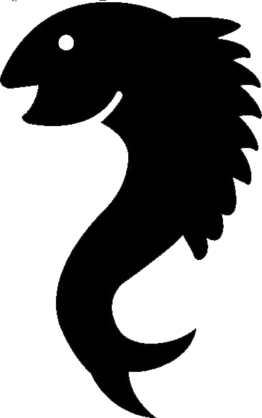
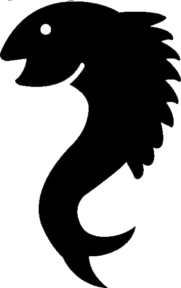

· 염경환 세계프로낚시꾼과 자웅 겨루다!
인천 출신으로 최근 활발한 활동을 펼치고 있는 방송인 염경환씨가 국내 최초로 'FLW(Fishing League Worldwide) Tour 2015'에 초청선수로 참가, 전 세계 프로낚시 선수들과 함께 자웅을 겨룬다.그동안 낚시 전문 방송에서 진행자로 활동해왔던 염경환씨는 지난 4월부턴 매주 금요일 저녁 <프리미어 스포츠피싱 FLW>의 진행을 하고 있다. 염경환씨는 오는 20일 출국, 미국 메릴랜드 포토맥강에서 FLW 포레스트우드컵 직전 펼쳐지는 본선 최종 투어 에 코앵글러(Co-angler, 아마선수 자격)으로 참가해 경기를 펼칠 예정이다.
· 영천댐, 불법 밤 낚시꾼에 몸살
영천시 자양면에 소재한 영천댐이 야간 낚시꾼들로 몸살을 앓고 있다.
특히 소형 고무보트에 밧데리를 장착한 전문가들의 포획이 활개를 치고 있어 시급한 단속이 필요한 실정이다.
상수원 보호구역으로 지정된 영천댐은 낙동강 유역 관리청 수계관리기금으로 주간에만 8명의 감시원이 근무를 하고 있으며 210만여평의 넒은 면적을 감시하기도 힘든 상황이다.
· 카약 낚시로 250kg 대형 물고기 낚은 강태공
카약 낚시를 하던 남성이 250kg의 대형 어종을 낚는 모습이 카메라에 포착돼 화제다.
27일 미국 뉴욕데일리뉴스는 플로리다주(州) 케이프 코랄에서 낚시용품 매장을 운영하는 존 블랙(Jon Black)씨가 지난 20일 250kg의 ‘골리앗 그루퍼’를 낚았다고 보도했다. 이날 블랙씨가 잡은 골리앗 그루퍼는 상어를 잡아먹을 정도로 ‘바다의 포식자’로 알려져 있는 대형 어종이다.
공개된 영상에는 카약 낚시를 하던 블랙씨가 골리앗 그루퍼를 물 밖으로 끌어내기 위해 온힘을 쏟는 모습이 담겨 있다. 이후 블랙씨는 2m에 가까운 골리앗 그루퍼를 물 밖으로 끌어내는데 성공했다. 이 과정에 녀석은 블랙씨의 낚싯대가 부러질 정도로 강하게 저항했다.